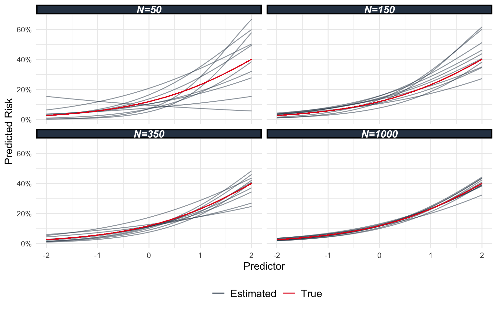

Introduction
I still moonlight as a biostatistician, and lately I’ve seen a lot of clinical prediction models. I won’t beat around the bush; they aren’t amazing models. Now, in fairness, it seems like a lot of clinical prediction models are.
There is a ton of ink spilled on how to go about making a model, like Frank Harrell’s RMS Notes (now in Quarto so you can copy + paste code), but often times people are looking for a shortcut. So I’m creating a sequence of blog posts on prediction models for clinical use. They are going to be short, sweet, and tell you the following things:
- What steps are involved in creating a model
- What are some possible resources you need to read/and or cite in your protocol or study.
- Why this is important, and why you should not skimp on the step in question.
I’m going to skip over questions of if a model should be built. We will just assume that there is a genuine need for a model and that you have data to answer that effectively.
Who Should Read This
These posts are intended for medical students and clinician researchers who are interested in making clinical prediction models. Ideally, you have some training in statistics (e.g. you should be able to tell me what the standard error for a binomial random variable is, or at least be able to look it up) and be familiar with R or Stata (SAS may also be fine, but SPSS is probably a “no”).
Please note however that these posts are not a full scale replacement for a statistician. They are intended to help you come to the table prepared to speak with a statistician.
Why Should You Read This
I can’t remember who tweeted this, but someone once tweeted that clinical prediction models are essentially little medical devices. They have the opportunity to guide patient treatment, and if you do not consider that a real possibility when creating a model then I would encourage you to consider why you’re building it in the first place. Consequently, we want to make sure that these models are well planned, well fit, well validated, and well communicated in preparation for their eventual use. Else, we are putting patients at risk.
At risk of beating a dead horse and coming off as flippant, the “Do No Harm” extends to products you create and research you promulgate.
Sample Sizes for Prediction Models
Sample sizes are usually the first thing you do for a study and it is worthwhile to sit back and consider the reason we do sample size computations. For statistical inference, we want to power our study to detect an effect of some variable. The rationale here being that if we do not have enough data, we might make a type II error (a false negative). The reason we would make this is because the test statistic can have a very large variance, meaning there is a reasonable chance we observe a test statistic below our critical value (or that our confidence interval might be too wide, same thing really). Variance is an obstacle, and we compute the sample size to know how much data we need to have a reasonable chance of overcoming that obstacle.
Variance is an obstacle in prediction too. Rather than talk about the variance of a test statistic, we are more interested in the variance of the prediction itself. Let’s see what I mean with a little example. Take a look at Figure 1. Each panel shows 10 predicted risk curves estimated from 10 different datasets, each having the number of observations indicated by the banner at the top of the plot. Notice how the lines in the \(N=50\) plot are really spread out? This is “variance” in the prediction case. Now, why is this an obstacle? Obviously, we want our predictions to be close to the true risk. With more data (and assuming the model is correctly specified), the predictions get closer and closer to the true risk curve (the red line). When we don’t have enough data, our predictions can be very far from the truth, and even show the opposite behaviour. See how there is 1 line in the \(N=50\) panel which actually predicts the risk decreases as the predictor increases? That’s what we are trying to avoid.

In 2020 Riley et. al (the et. al includes such names as Frank Harrell, Maarten Van Smeden, and Gary Collins) published Calculating the sample size required for developing a clinical prediction model (Richard D. Riley et al. 2020). This paper is essentially a guide on what to think about with respect to sample size before creating a model. You should really read it, but I will summarize a few points for you here. But first, a quick work on a popular rule-of-thumb.
How Not To Compute a Sample Size: EPV is Misused and Misunderstood
A popular rule-of-thumb is that you can adjust for one variable for every 10 events or non-events (whichever is fewer). This rule apparently came out of the 90s, the studies which produced it focused on the bias and precision of the estimated effect. Those are fairly important if you’re doing statistical inference, but we don’t care about p values and confidence intervals as much when we are creating a prediction model. Additionally, a bit of bias can actually be a good thing. See the James-Stein phenomenon for more on this.
Even if 10 EPV were a good rule of thumb it is often misunderstood. The rule actually states that for every 10 event/non-event (again, whichever is the fewer) you can estimate one additional parameter. A single variable can be associated with multiple different parameters. For instance, a categorical variable with \(K\) categories will require \(K-1\) parameters (1 is lumped into the intercept). A continuous variable requires 1 parameter if you assume the effect is linear on the appropriate scale, but if you were to relax that assumption and use a restricted cubic spline (sometimes called a natural spline) then you need \(df-1\) parameters, where \(df\) is the number of knots. Additionally, under this rule, the first 10 events are used to estimate the intercept, so really you need 20 events to even begin to think about modelling.
There has been some research into the rule of thumb, and a few papers say if any such rule were to exist then the required events per parameter might be as high as 50. In short, the 10 EPV rule of thumb is not a justifiable means of selecting a sample size. Luckily, Riley et. al are going to provide us with 4 steps to determine the sample size for our model. Let’s discuss that next.
4 Steps For Predictive Model Sample Size:
In what follows, I’m going to explain to you the four steps to creating a predictive model sample size. Each step estimates a sample size to meet some criterion. At the end of the 4 steps, we choose the largest sample size as our final sample size for our model. Much like a chain, a model is only as good as its weakest part. So if we choose the largest sample size among the 4, we automatically ensure all 4 criteria will be met. That’s going to lead to a good model (or at least a good plan to make a model).
Step 1: What Sample Size Will Produice a Precice Estimate of the Overall outcome Risk or Mean outcome Value?
Consider the simplest model you could possibly make: 1 parameter. This model is going to estimate the mean outcome. If this estimate can not be made precisely then in what sense would the model you want to build – with potentially many more parameters – be considered a good model?
The way to do this is to consider the margin of error in the estimate of the intercept. The authors recommend a margin of error no larger than 0.05. For a binary outcome, the margin of error, \(\delta\) 1, is
\[ \delta =2 \sqrt{\dfrac{p (1-p) }{n}} \>. \]
Here, \(p\) is simply the anticipated mean outcome (number of outcomes divided by number of samples). The margin of error is maximized when \(p=0.5\), so if you don’t have a good estimate of \(p\) just assume the worst and you’ll be prepared for most anything. Inverting this for \(n\) yields 2
\[ n = \left(\dfrac{2 \times 0.5}{0.05}\right)^2 = 400 \]
So at this point, the absolute smallest sample size you would need for a binary outcome would be 400 samples. If you had fewer than 400 samples and no predictors, then your estimate of the intercept in the worst case when \(p=0.5\) would have a margin of error larger than 0.05.
If you’re already sweating about the math here, don’t worry. We’re going to wrap this blog post up with an R function to do all this math for you.
Step 2: What Sample Size Will Produce Predicted Values That Have a Small Mean Error Across All Individuals?
Hopefully, our data have a wide variety of individuals from which to learn. We want the predicted outcome to have a small error across all those individuals, else we’re going to do really well for some individuals and really bad for others.
Its hard to collapse “small error” onto a single quantity like we did in the last step. There are a few things which can affect the performance of the model, including the sample size, the number of candidate predictors, and the anticipated average outcome. Lucky for you, all you need from this step is the number of candidate predictors as well as an estimate of the average outcome. The library we’re going to be using will do the computation for this step for you.
Though, if you are interested, Richard D. Riley et al. (2020) has an appendix on how this is done.
Step 3: What Sample Size Will Produce a Small Required Shrinkage of Predictor Effects?
Overfitting is a problem we need to avoid. The authors of Richard D. Riley et al. (2020) describe overfitting as:
[…] when a devloped model;s predictions are more extreme than they ought to be for individuals in a new dataset from the same target population.
The authors use the example of a model fit to a binary outcome to demonstrate this. In an overfit model for a binary outcome, the predicted risks will be too close to 1 for individuals with a higher than average risk, and will be too close to 0 for individuals with a lower than average risk. Overfit models’ look really good on the data used to fit the model, but fail to cary that performance over to new observations.
One way to combat overfitting is to bias the parameter estimates a little bit 3. This isn’t a silver bullet, but it is a good tactic to try. For this step, we need to find a sample size such that the desired level of bias (what the authors reffer to as shrinkage) is \(\leq 10\%\). For this step, you need to know the number of predictor parameters as well as the outcome proportion/rate for binary/time-to-event models.
You’re also going to need to have an estimate of the Cox-Snell R squared for the model. Typically, you can get this from a previously published model (if it is reported), or you can estimate it using a number of techniques described in (Richard D. Riley et al. 2019). For a continuous outcome, the Cox-Snell R squared is simply the coefficient of determination.
Step 4: What Sample SIze Will Produce a Small Optimism in Apparent Model Fit?
Optimism is the difference between the performance of your model on the data used to fit it, and the performance of your model on new data. Every model is going to have some optimism, that is just a fact of life. We just want that optimism to be small.
For this step, all you need is an estimate of the Cox-Snell R squared.
Examples
Many applied examples are provided in (Richard D. Riley et al. 2020), but I thought we could find some real life examples and try to do the calculation ourselves.
References
Footnotes
Continuous and survival data have their own computations for margin of error. See (Richard D. Riley et al. 2020) for more.↩︎
Note, the authors use the proper \(z\)-quantile of 1.96, which yields a 385 samples. Often in medicine, 15 samples is a lot so if you need to be precise and use 385 as the sample size for this step, then do it.↩︎
Told you bias was a good thing sometimes.↩︎